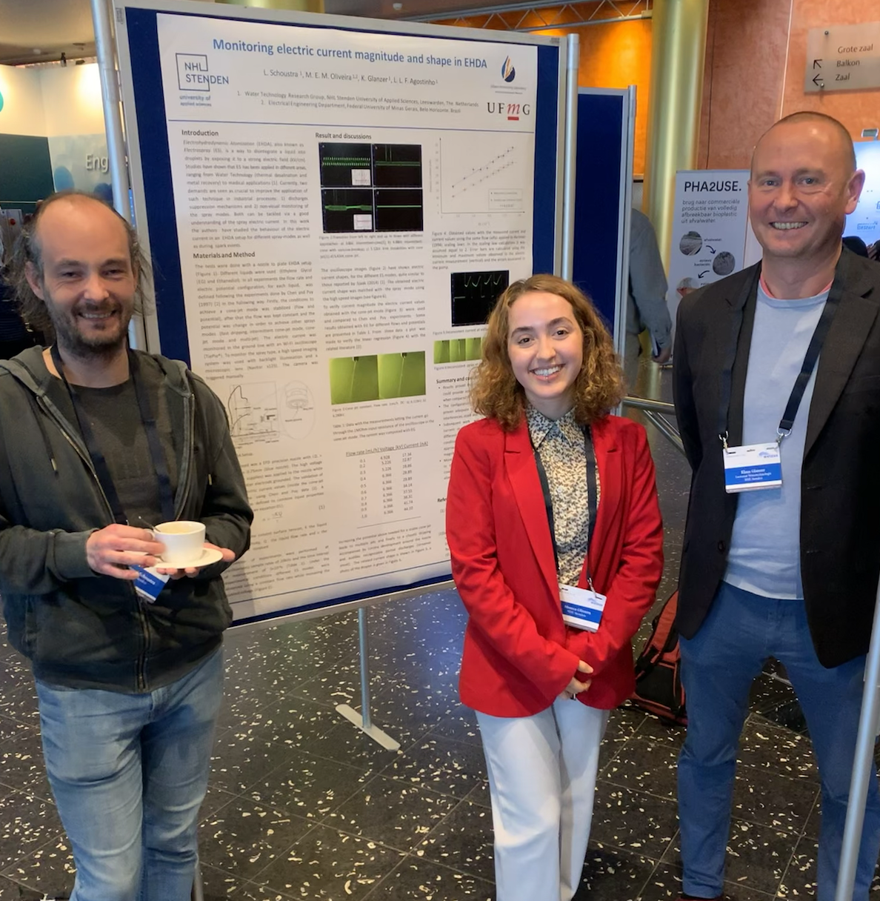
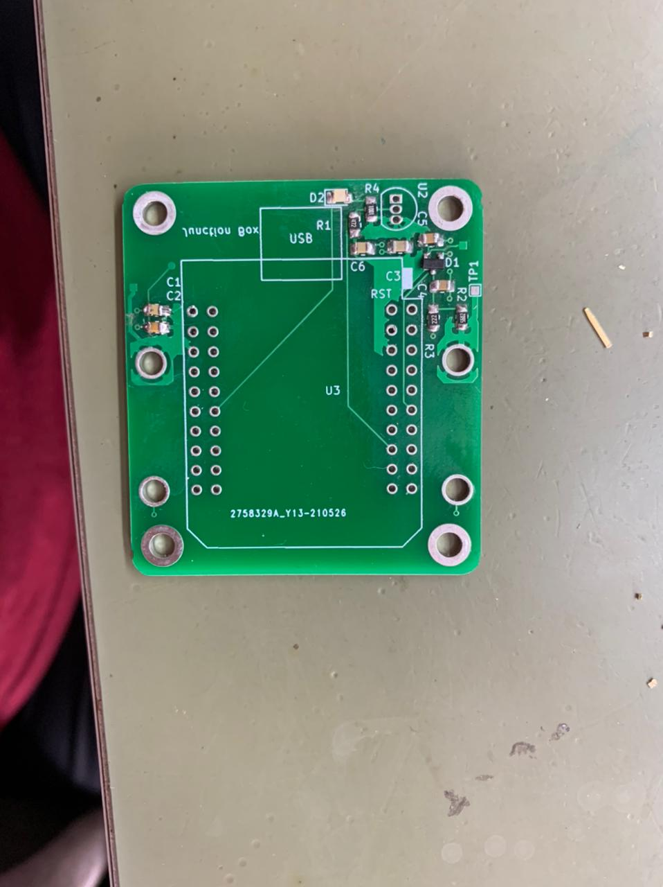
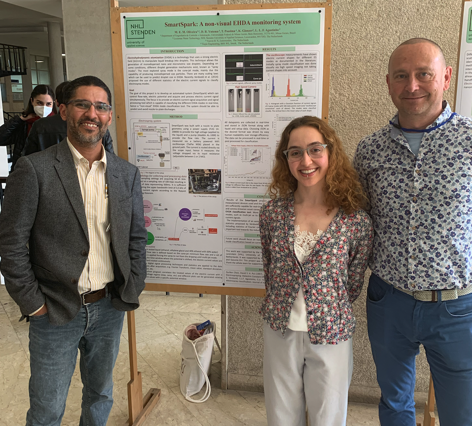
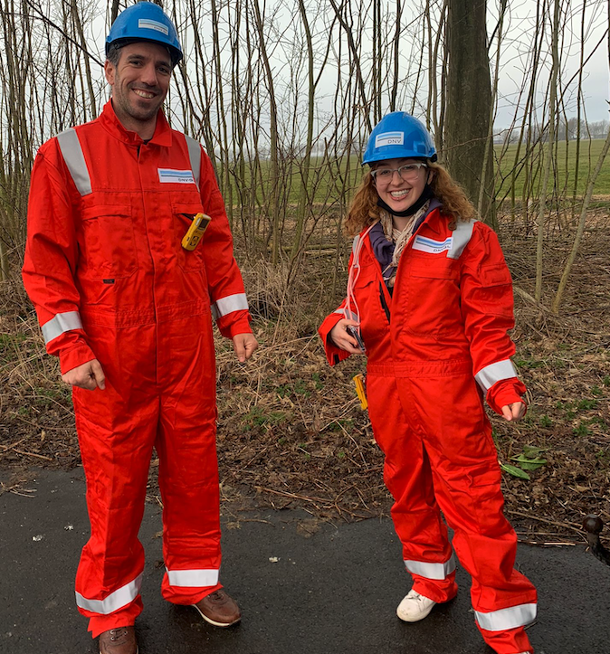
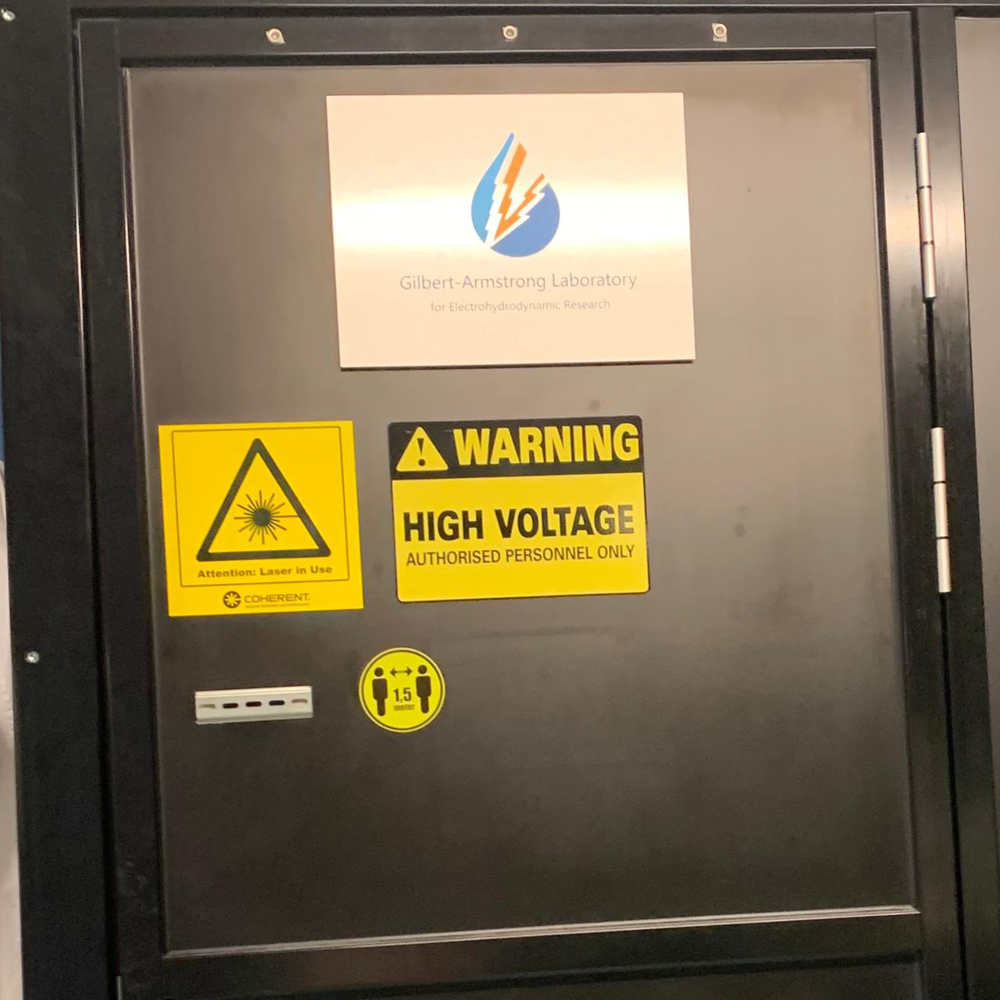

Experience
Electronics Engineer
Embraer
February 2023 – Present | São José dos Campos, São Paulo, Brazil
- Firmware engineering and Flight Control System team collaboration. Interface with various teams.
- Developed VHDL for Xilinx and Altera/Intel FPGA and Ruby/Python for verification tests for Airborne Electronic Hardware (AEH) certification based on DOORs requirements using Modelsim/Questa.
- Created testbenches with C and VHDL.
- Modeled transfer functions based on datasheets for various aircraft interfaces and components.
- Drafted firmware requirements for different components and interfaces.
- Verified and analyzed sensor data for the Flight Control System. Conducted root cause analysis and FMEA analysis. Debugged architecture for flight control issues.
- Developed routines to calibrate and automate actuator tests. Conducted weekly meetings with actuator suppliers, managed configuration control, and performed derating analysis.
- Performed and analyzed digital signal data for Electromagnetic Interference (EMI) tests based on architecture. Debugged, emulated, and tested integrated systems.
- Designed and developed single pilot control law in MATLAB/Simulink. Conducted integrated tests.
Electrohydrodynamic Atomization Research Intern
NHL Stenden University of Applied Sciences
August 2021 – August 2022 | Leeuwarden, Friesland, Netherlands
- Developed a spark detection and prevention device for Electrohydrodynamics Atomization Applications in real-time at the High Voltage (HV) Laboratory in the Water Technology Center.
- Integrated high-speed cameras, HV power supplies, shielding, Wi-Fi oscilloscopes, pumps, sensors, cables, and a monitoring and controlling system in an electrospray system using C++/Python libraries and drivers. The device is still in use in the HV Lab. Utilized Wi-Fi, I2C, GPIOs, USBs, and logic/protocol analyzers for debugging embedded systems.
- Developed an electric current datalogger with Raspberry Pi 4B+ and GSM using InfluxDB and Grafana for remote control of a gas company in the Netherlands. Worked independently with weekly meetings with advisors Klaus Glanzer, PhD, and Luewton Agostinho, PhD.
Power Electronics Researcher
Laboratório de Potência TESLA - UFMG Electrical Department
December 2018 – April 2021 | Belo Horizonte, MG, Brazil
- Developed PCBs with ESP32 using KiCAD. Designed, developed, and tested PCBs from prototyping to production, including soldering SMD components. Technologies used: ESP32, ESPEasy, KiCAD, Nextcloud, Emoncms, and NODE-RED.
- Monitored a solar panel grid to observe differences in electric current, temperature, and humidity in the solar strings circuitry. Simulated a Battery Management System (BMS).
- Worked on the SmartBattery project in partnership with Petrobras.
- Researched and developed an internal network and data control system for photovoltaic panels at Escola de Engenharia at UFMG using Raspberry Pi 3. Configured LAN and worked independently with weekly meetings with advisor Thales C. Maia, PhD. Junction Box with ESP32 on KiCAD project access
Physics Teacher - Volunteer
Rede Emancipa
March 2020 – May 2021 | Belo Horizonte, MG, Brazil
- Taught remotely throughout the pandemic period.
System Analyst
VMI Security
November 2020 – April 2021 | Belo Horizonte, MG, Brazil
- Programmed in C++ (embedded), QML, and Python in Qt Creator for an X-ray company. Computer vision improvements, calibration, and filters using the OpenCV library.
- Handled embedded programming, protocols, parallel and asynchronous programming (MQTT, UART, etc.). Used Git, Agile methodologies, and team collaboration. Managed Docker, software and architecture development, and network device administration (Linux).
Software Developer
Fundação CEFETMINAS
October 2019 – March 2020 | Belo Horizonte, MG, Brazil
- Developed full-stack applications using Python, Python Flask, JavaScript, HTML, PHP, and Postgres database. Created a QR code generator in Python. Maintained physical servers and websites. Created and modeled relational databases in SQL Server. Used SeekTable for data cleaning, modeling, and displaying. Experienced in system administration (Linux and Windows).
Computer Vision Researcher
UFMG
May 2018 – November 2018 | Belo Horizonte, MG, Brazil
- Worked on a master's project with MATLAB in the Civil Engineering Department. Developed computer vision code to identify and classify railway sleepers. Used MATLAB tools to filter and process GoPro videos. Advisors: Laís Faria, Nilson Tadeu Ramos Nunes.
Skills
- Languages: C, C++, VHDL (Xilinx/Altera), Python, Matlab, Simulink
- Microcontrollers STM32, ESP32/8266, KiCAD, Raspberry
- Tools: KiCAD, Unix, Linux, MACOS, Git/SVN, Docker, Grafana
Languages
- Portuguese: Fluent
- English: Fluent
- Dutch: Intermediate
- German: Intermediate
- Spanish: Intermediate
Certification
- 2023: IELTS, 6
- 2022: VCA-B-SCC Certification of the knowledge of safety and health for industrial environment, Netherlands, 2022
- 2020: Sensors and Sensor Circuit Design, by University of Colorado Boulder and offered through Coursera.
- 2020: DevOps Culture and Mindset Course, by the University of California, Davis, and offered through Coursera.


.jpeg)

.jpeg)

.jpeg)
.jpeg)

.jpeg)
Many.